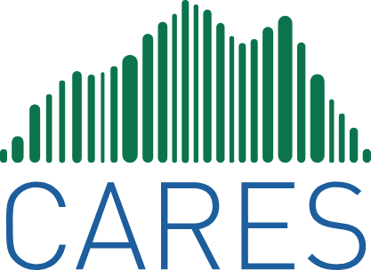

Nous mobilisons, soutenons et accompagnons les municipalités et les MRC pour créer des milieux de vie favorables à la santé.
Comment l’aménagement de nos milieux de vie influence la santé et la qualité de vie de la population.
Trois outils conçus pour l’évaluation d’impact sur la santé du plan d’urbanisme de Mont-Tremblant.
Un projet de la Direction de la recherche et de l'enseignement sur l'accompagnement des organismes municipaux dans le développement et la création d'environnements favorables à la santé.
